Issues of Ubiquitous Music Archaeology
Victor Lazzarini
Music Department, Maynooth University
About Me
Computer music languages, systems, and platforms; embedded computing; high-performance computing; analogue computing.
Musical signal processing; spectral methods; analogue and virtual digital models.
Ubiquitous music; Computational thinking in Music; Mathematical music theory; a-ubimus.
Lazzarini, V (2021), Specral Music Design: A Computational Approach, Oxford Univ. Press.
What is ubiquitous music?
Ubiquitous music (ubimus) can be described as a research/practice area where music intersects with various fields of knowledge: computer science, acoustics, signal processing, psychology, cognition, education, etc.
Its origins lie in the extension of the concept of ubiquitous computing (Weiser 1991) to music, and the notion that technologies tend to recede to the background and become invisible.
However, while this served as a jumping point, ubimus developed outwards to incorporate many other ideas and working methods
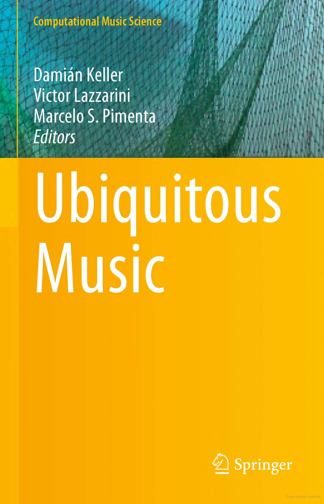 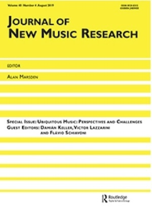
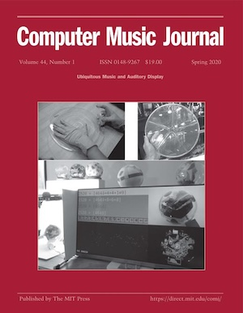 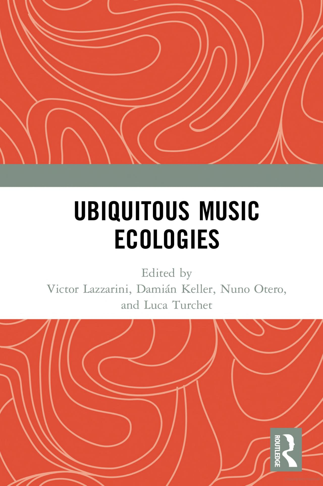
Software Archaeology
"This isn’t programming, this is archaeology!" the programmer
complained, wading through the ancient
rubble of some particularly crufty piece of
code.
(Hunt and Thomas,
Software Archaeology , 2001)
Along with other products of human activity, software as artefacts can be subject to archaeological study.
As noted by Hunt and Thomas (2001), a piece of code can be taken as a legacy object almost as soon as it is written.
Understanding software, and learning from it, may even be an active aspect of working with an existing codebase that is continuously maintained.
Just as in other forms of archaeology, we should develop techniques to handle and study code in a very careful and non-destructive way.
We should try to learn from the motivations and decisions taken in the design of a piece of software.
We should refrain from immediate reactions such as "what in the hell where they thinking", but try to discover something about the frame of mind of the creators of the code we are looking at.
Ubimus Archaeology (a-ubimus)
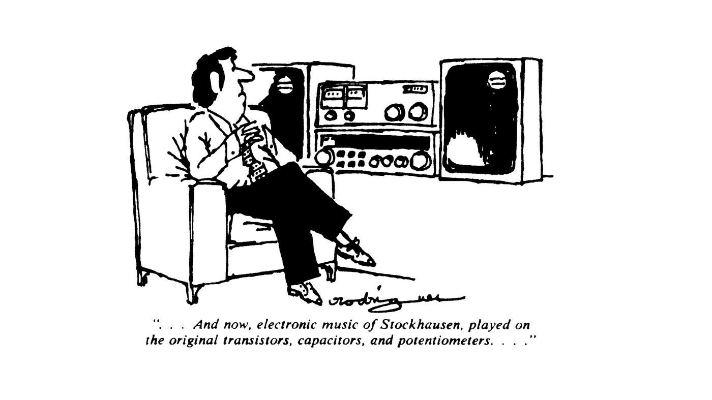Beyond the techniques and methods of software archaeology lies the field of ubimus archaeology, or a-ubimus (Keller and Lazzarini 2021).
Here we are interested in recovering and reconstructing various related artefacts (software, hardware, audio, documentation, etc) and tracing the ideas that led to these, also taking into consideration the context, material resources and byproducts related to ubimus activities.
The study of a-ubimus has several cross-concerns: for instance, we can speak of the archaeology of creative resources, the archaeology of creative models, and the archeology of creative ecosystems.
While it has emerged only recently as a distinct field of research, it has a number of important precendents.
Among these we could cite
- the work of Zattra et al (2007) in the reconstruction of Chowning's Stria, as an example of rescuing the materials and ideas associated with a key artefact of Computer Music.
- Reconstructed versions of classic computer music packages (MUSIC V, CMusic, mit-ems Csound) were offered as part of my Audio Programming Book (MIT Press, 2010) is also a precendent that led to work in a-ubimus.
- A detailed studied of music programming systems in Lazzarini (2013) is also representative of early work in a-ubimus.
- More recently, the work of Frances Morgan (2021) on the Electronic Music Studios (EMS) of London can also be placed within the scope of a-ubimus.
Case Study: Reconstructing Risset's Little Boy
To demonstrate an instance of a-ubimus research, we will examine a recent work reported in Lazzarini et al (2023).
Jean-Claude Risset's Little Boy Suite is an example from the early computer music period (1961-9).
Composed using MUSIC V for sound synthesis, it was assembled out of various rendered fragments into a complete work on magnetic tape.
This is a work whose sources were deemed to be lost, and as part of our research, we were able to recover them.
To accomplish the reconstruction, we were required to
- Recreate a working copy of MUSIC V as used by Risset (a replica)
- Recover the MUSIC V code (scores) used to realise the sounds in the piece
- Identify the use of the fragments in published versions of the work
MUSIC V Replica
MUSIC N Family
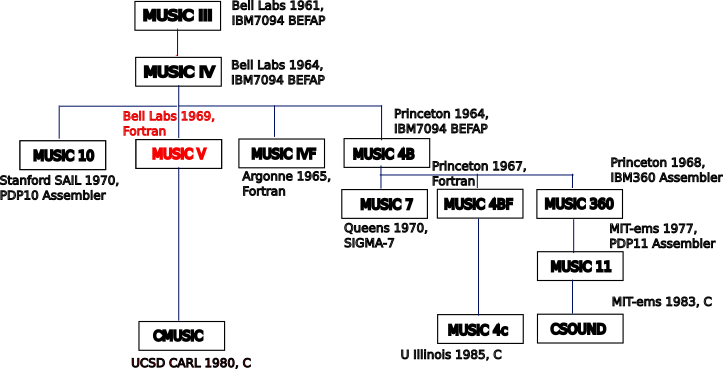Methodology
- Use version control
- Respect the original code; use comments to help preserve original code; additions/modifications only made in extreme cases.
-
Do not assume the code runs (and runs as intended) just because it
compiles and builds.
- Capture snapshots of it in operation, using tracing, checking outputs against expected results.
- Cross-compare different sources.
Sources
A semi-restored FORTRAN source code, from a 1975 SAIL printout, turned into machine-readable format, with a few adjustments for gfortran, by Bill Schottstaedt (2008)
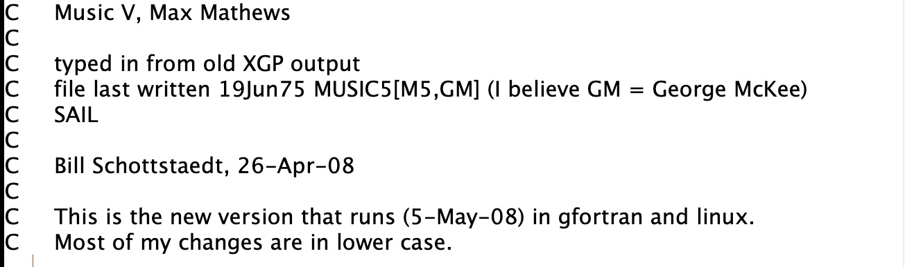Fragments of code found in J. C. Risset's Catalog of Computer Synthesized Sounds (1969)
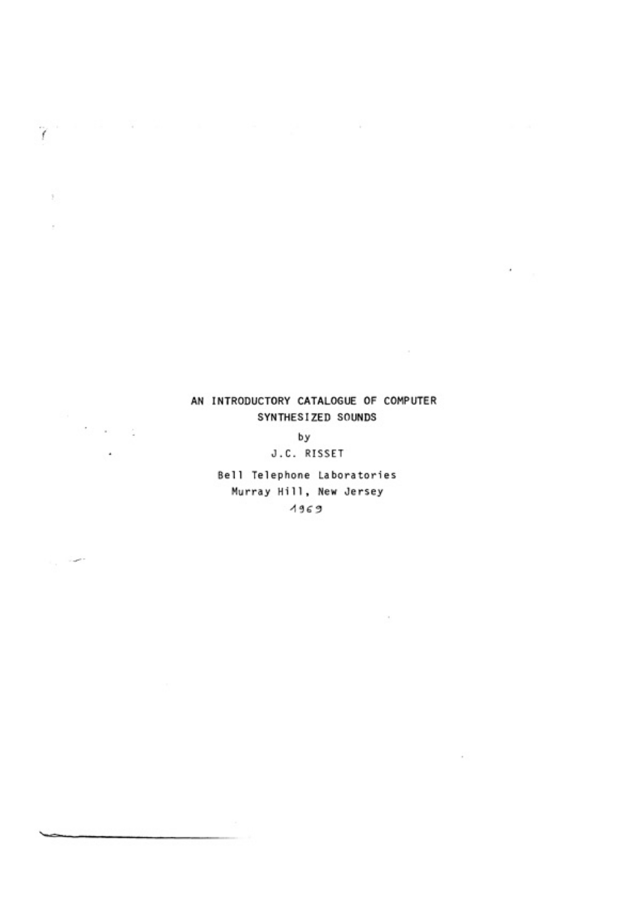The MUSIC V manual/tutorial in chapters 2 and 3 of the Mathews et al (1970) The Technology of Computer Music . This provided some code fragments and a full outline of the program that were helpful to debug and reconstruct non-working parts.
A facsimile of computer printouts from 1968 of MUSIC V found amongst Risset's archive materials.
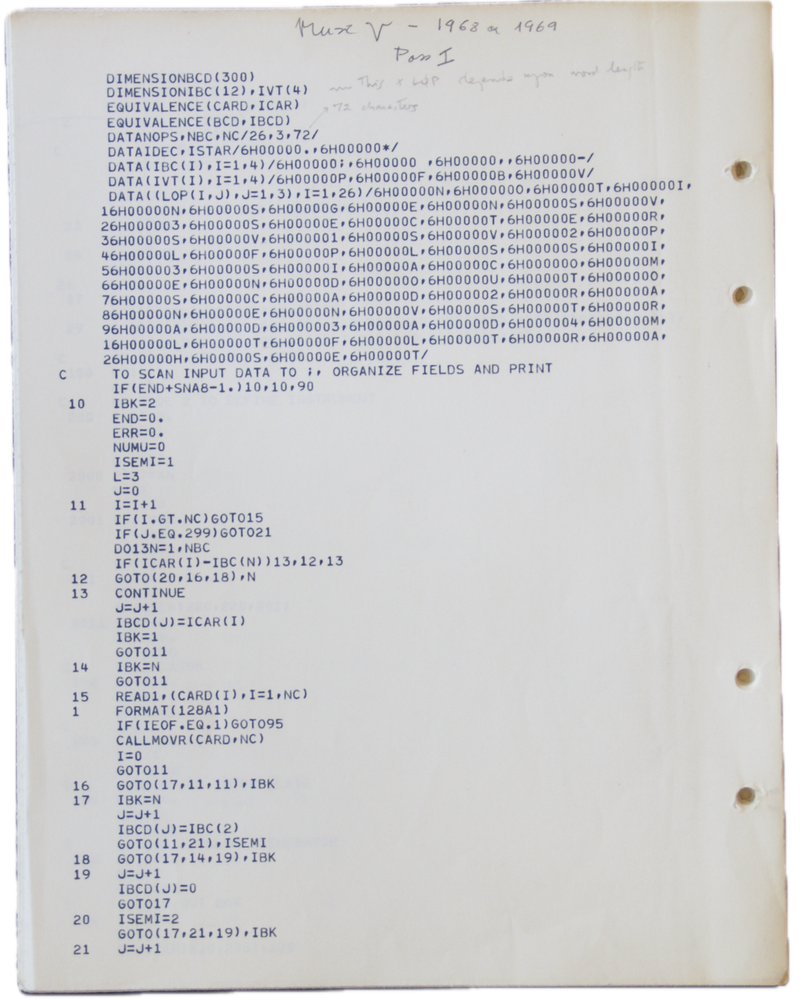Little Boy Reconstruction
46 MUSIC V scores were recovered from the Fonds Risset archives in Marseille.

These scores were transcribed into a machine-readable format
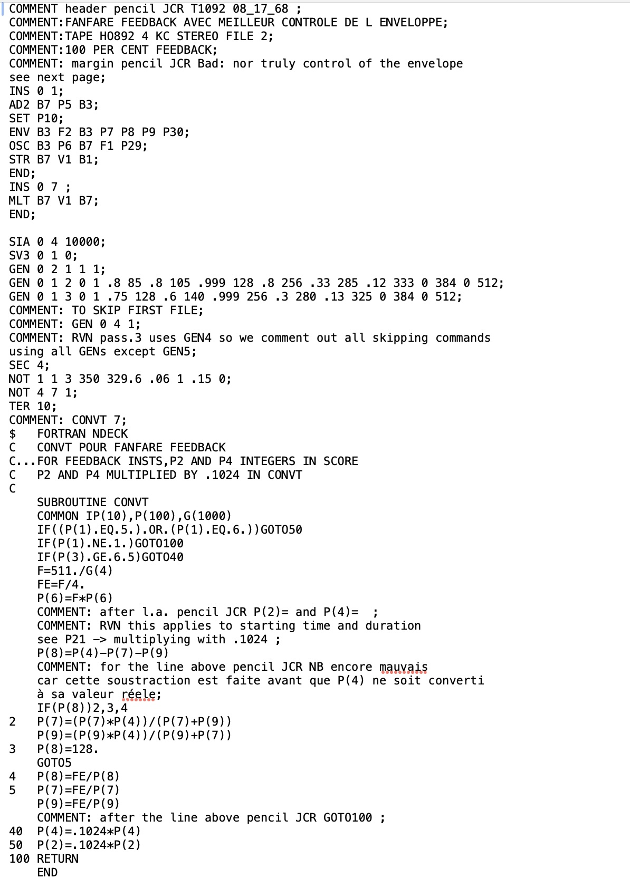The MUSIC V replica was used to render this code into audio files
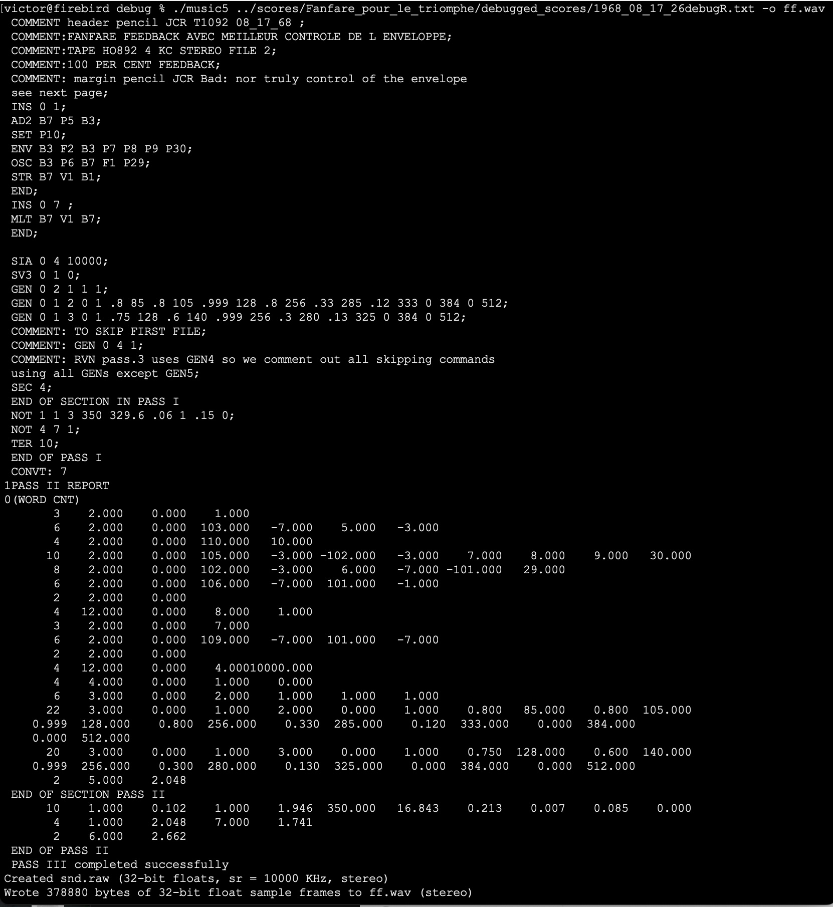An iterative process was worked out where code was run and the MUSIC V replica was modified to yield correct results
Running errors, invalid outputs, etc where examined to provide corrections to the software
Synthesised fragments were compared to the mixed/produced versions of the piece.
Results & Discussion
MUSIC V versions
The a-ubimus approach demonstrated that many alternative versions of MUSIC V existed.
Variations were customised by composers to better suit their work or a particular piece.
We have preserved the various uncovered versions of the software using modern versioning control.
Re-evaluating Contributions
As part of this process, we were able to re-evaluate contributions to the development of computer music, correcting the historical record
- Frequency modulation (FM) synthesis was first explored by James Tenney in the period of 61-4, using noise as modulator.
- We found the earliest extant code fragment of sinusoidal FM (by Risset), which precedes John Chowning's paper by around 5 years.
- We traced the development of feedback amplitude modulation (FBAM) by Risset, and reconstructed the Fortran source code of a FBAM unit generator by F.R.Moore (which had been lost).
Working Environment Dynamics
We have been able to explore the dynamics of the work at Bell labs and the interaction between composers and engineers/scientists.
It is interesting to note that while many interests where shared, there were differing opinions/perceptions regarding the use of computer technology for musical ends.
Precision?
We were also able to question the myth of precision that arose in early computer music.
While it is true that sound synthesis was much more reproducible that in the analogue studio, many variables still existed.
In particular, all sources had to be decoded and recorded into magnetic tape, prior to editing/mixing. That challenged the idea of a fully precise process.
Conclusions
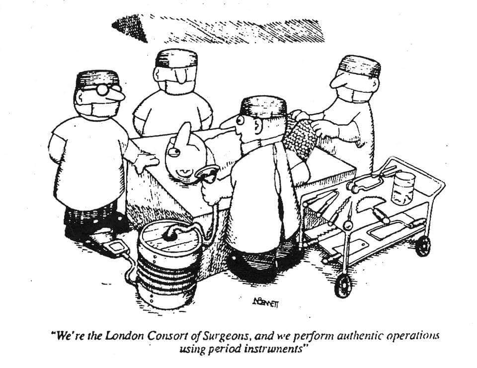A-ubimus Contributions
Research in a-ubimus can contribute to an understanding of music, techniques, technologies, and the creative environment around these.
It can allow re-use of lost software/hardware in new musical applications.
It can also teach today's practioners lessons about the development of the tools of their trade.
Applications
- Reconstruction of lost musical works.
- Recovering of techniques and artefacts for music making.
- A re-evaluation of the emergence and development of musical practices.
Digital Humanities
A-ubimus has a strong connection to research in the Digital Humanities. Many of the approaches and methods can find common ground. It is of course directly related to cultural archaeology, and it would be useful to explore these connections further.
Acknowledgements
D. Keller and N. Radivojevic, co-authors of the case study reported here.
Vincent Tiffon from Fonds Risset for providing access to Risset's archival mateiral.
Bill Schottstaedt for providing the machine-readable transcription of the SAIL version of MUSIC V.
References
- Weiser, M. (1991). The Computer for the 21st Century. Scientific American 265.
- Hunt, A., and Thomas, D. (2002). Software archaeology. IEEE Softw. 19.
- Lazzarini, V. (2013). The development of computer music programming systems. J. New Music Res. 42.
- Zattra, L., Meneghini, M., Baudoin, O., and Dahan, K. (2007). Reconstructing Stria (Special Issue). Computer Music Journal 31 (3).
- Morgan, Frances (2021). Electronic Music Studios London Ltd (EMS), the Synthi 100 synthesizer and the construction of electronic music histories, PhD thesis, Royal College of Art, London.
- Lazzarini, V., and Keller, D. (2021). Towards a ubimus archaeology. Proceedings of the Workshop on Ubiquitous Music (UbiMus 2021) , Porto, Portugal.
- Lazzarini, V., Keller, D., and Radivojevic, N. (2022). Issues of ubimus archaeology: Reconstructing Risset’s music. Proceedings of the Sound and Music Computing Conference , St.Etienne, France.
- Keller, D., Radivojević, N., and Lazzarini, V. (2022). Issues of ubimus archaeology: Beyond pure computing and precision during the analogue-digital transition. Proceedings of the Ubiquitous Music Symposium (UbiMus 2022) , Curitiba, Brazil.
- Lazzarini, V., Keller, D., and Radivojevic, N. (2023). Issues of ubiquitous music archaeology: Shared knowledge, simulation, terseness, and ambiguity in early computer music. Front. Sig. Proc 3.